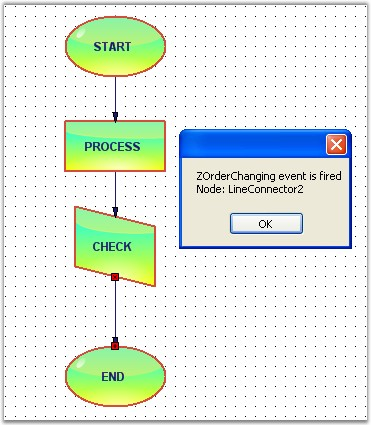
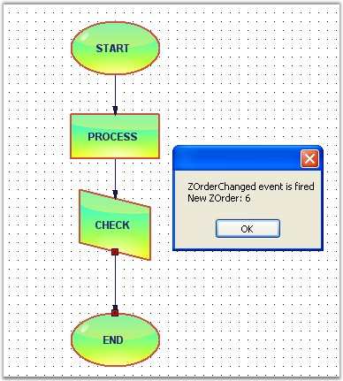

When the node order is being changed from front-to-back or back-to-front, the Z-Order value gets changed.
The below table contains Z-Order events:
|
DocumentEventSink |
Description |
|
ZOrderChanged |
Gets fired after the ZOrder value is changed. |
|
ZOrderChanging |
Gets fired when the ZOrder of the node is changed. |
Data can be retrieved / set by using the following members.
|
ZOrder EventArgs Members |
Description |
|
Cancel |
Cancels the ZOderChanging event. |
|
ChangeType |
It returns the following possible values, Front - whether the controller bring the node to the front, Back - whether the controller send the node to the back. |
|
NodeAffected |
Returns the node's name by which the node was affected. |
|
ZOrder |
Returns the current zorder value. |
Programmatically the events are written as follows:
|
[C#]
public void Form1_Load(object sender, EventArgs e) { ((DocumentEventSink)model1.EventSink).ZOrderChanged += new ZOrderChangedEventHandler(Form1_ZOrderChanged); ((DocumentEventSink)model1.EventSink).ZOrderChanging += new ZOrderChangingEventHandler(Form1_ZOrderChanging);
diagramWebControl1.Controller.BringToFront(); } void Form1_ZOrderChanging(ZOrderChangingEventArgs evtArgs) { MessageBox.Show("ZOrderChanging event is fired" + "\n" + "Node: " + evtArgs.NodeAffected.Name.ToString()); } void Form1_ZOrderChanged(ZOrderChangedEventArgs evtArgs) { MessageBox.Show("ZOrderChanged event is fired" + "\n" + "New ZOrder: " + evtArgs.ZOrder.ToString()); } |
|
[VB]
Public Sub Form1_Load(ByVal sender As Object, ByVal e As EventArgs)
AddHandler DirectCast(model1.EventSink, DocumentEventSink).ZOrderChanged, AddressOf Form1_ZOrderChanged AddHandler DirectCast(model1.EventSink, DocumentEventSink).ZOrderChanging, AddressOf Form1_ZOrderChanging
diagramWebControl1.Controller.BringToFront() End Sub Private Sub Form1_ZOrderChanging(ByVal evtArgs As ZOrderChangingEventArgs) MessageBox.Show(("ZOrderChanging event is fired" & vbLf & "Node: ") + evtArgs.NodeAffected.Name.ToString()) End Sub Private Sub Form1_ZOrderChanged(ByVal evtArgs As ZOrderChangedEventArgs) MessageBox.Show(("ZOrderChanged event is fired" & vbLf & "New ZOrder: ") + evtArgs.ZOrder.ToString()) End Sub |
Sample diagram is as follows:

Figure 61: Z-Order Changing Event

Figure 62: Z-Order Changed Event